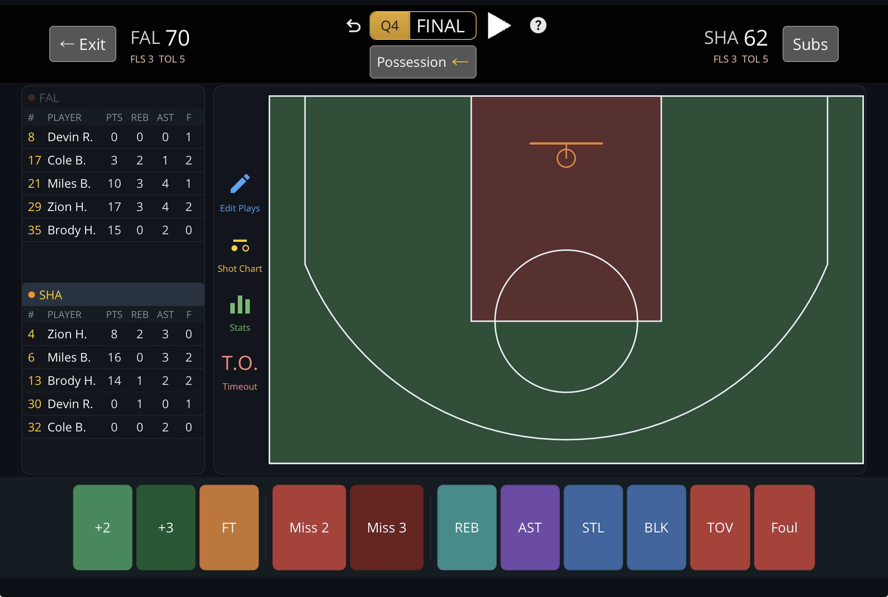
Common
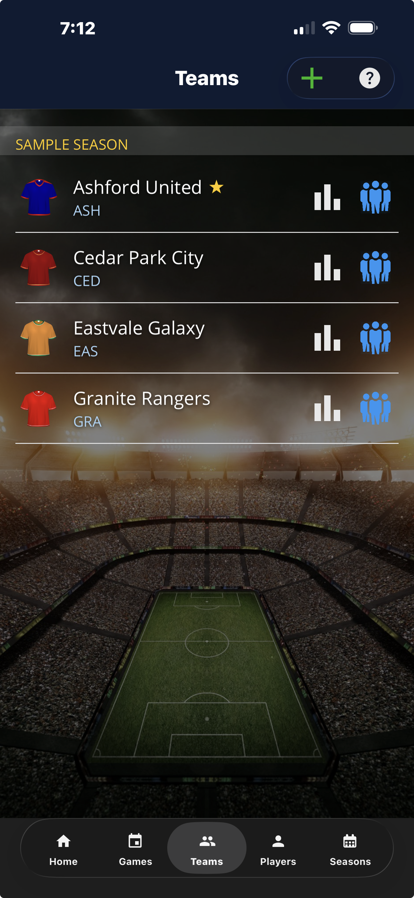
Teams
All your teams in one place — soccer and basketball — each with its own roster and season stats.
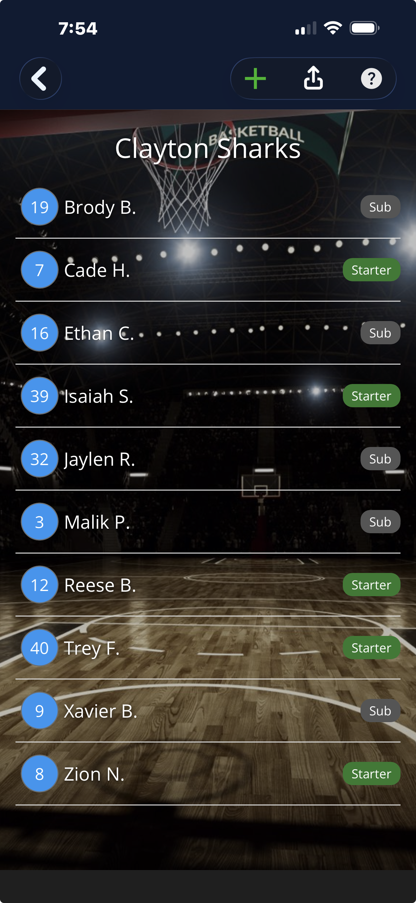
Roster
Set your lineup — squad numbers and who's starting.
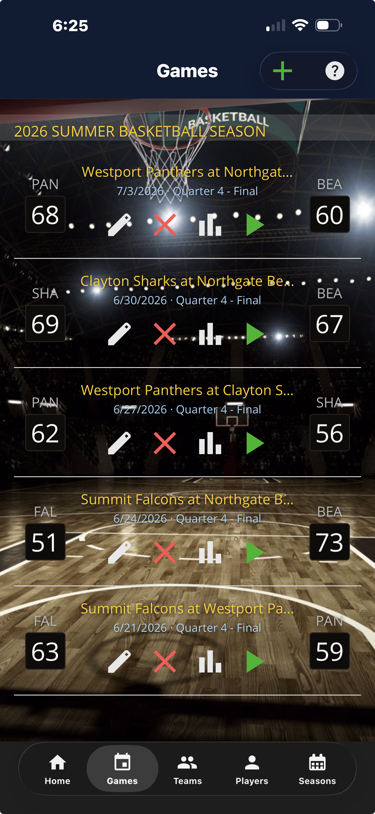
Games
All your games in one place — live scores, finals, and the season they belong to.
Soccer
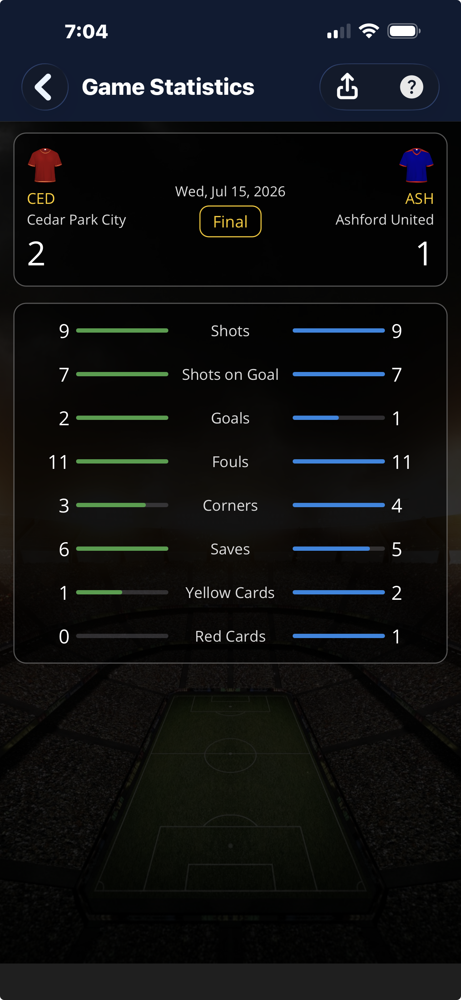
Game Statistics
Shots, shots on goal, goals, fouls, corners, saves and cards — side by side.
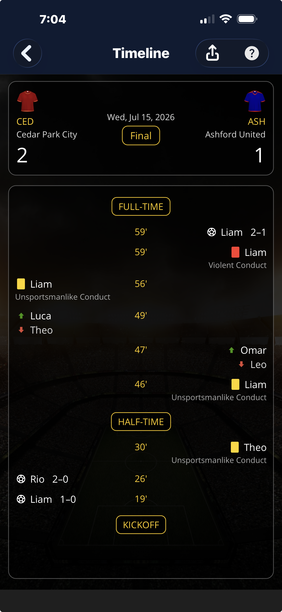
Timeline
The whole game, top to bottom: goals, cards, subs, and the half markers.
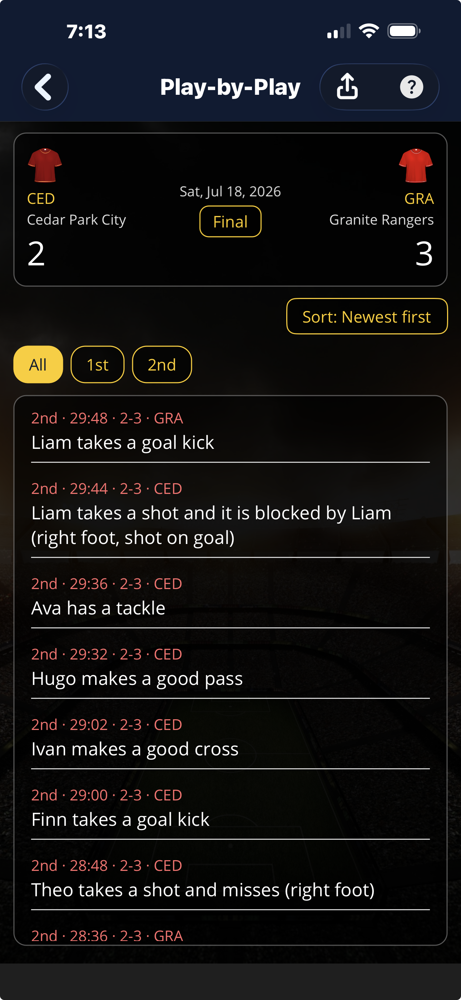
Play-by-Play
Every logged play in plain language, newest first, with goals called out.
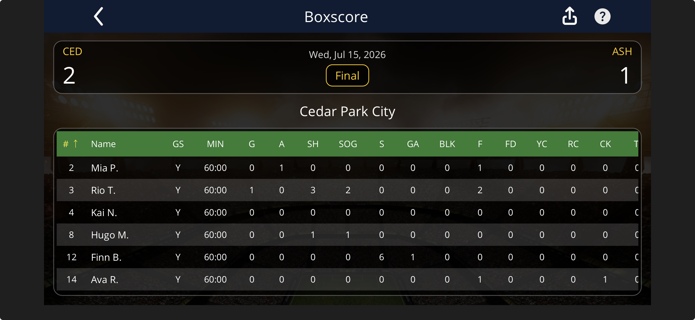
Box Score
Per-player minutes, goals, assists, shots and more in a clean table.
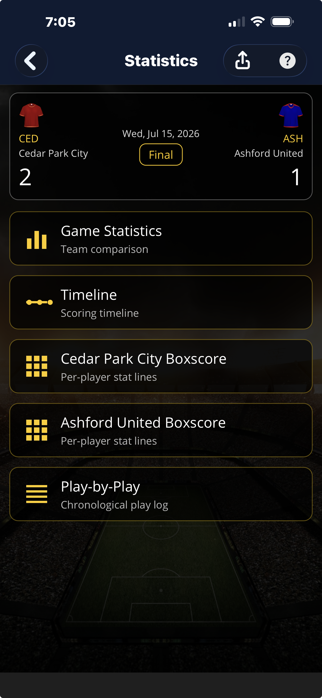
Stats Hub
One screen to jump into any report for the game you just tracked.
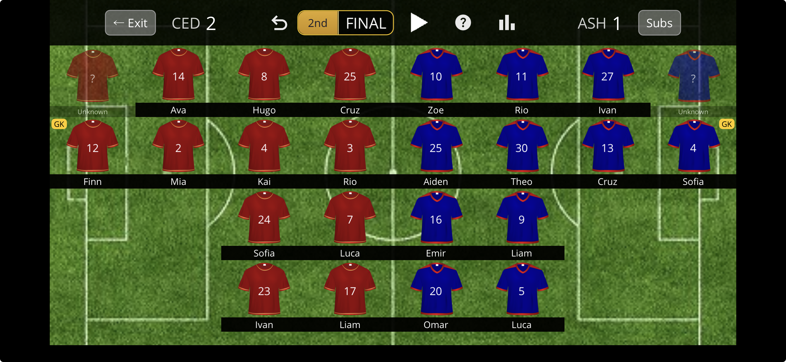
Full field view
The complete lineup for both sides, goalkeepers marked, score in view.
Basketball
Game manager
Both teams on the court, score and clock up top. Tap a player to log points, rebounds, assists, fouls and more.
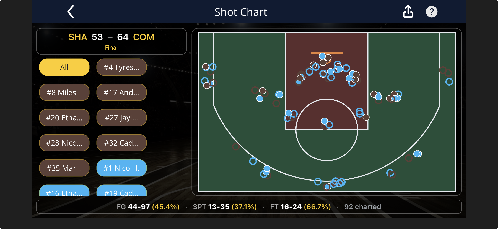
Shot chart
Every shot mapped to where it came from — makes and misses, right on the floor. Free to view, no paywall.
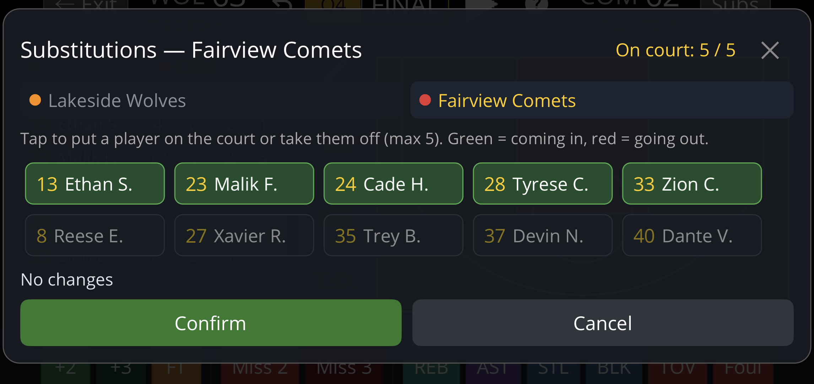
Subs & bench
Swap players from the bench mid-game. Minutes played tally automatically from every substitution.
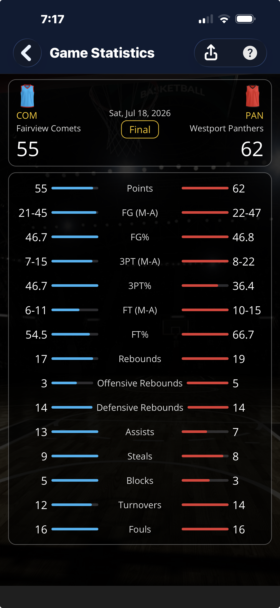
Game Statistics
Points, rebounds, assists, steals, blocks and shooting splits — both teams, side by side.
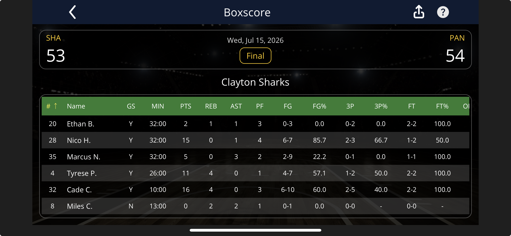
Box Score
Per-player points, rebounds, assists, steals, blocks, turnovers and shooting splits in a clean table.
Seasons
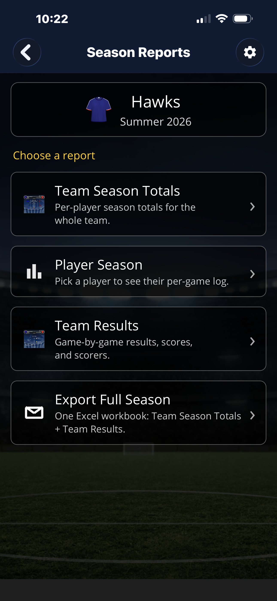
Season Reports
Pick a report — team totals, player logs, results, or a full-season export.
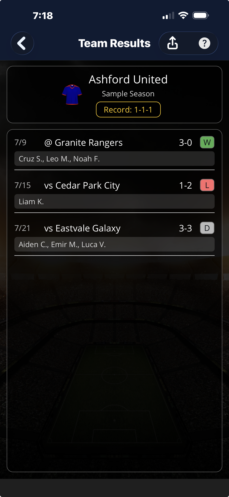
Team Results
Game-by-game results with final scores and who scored (soccer).
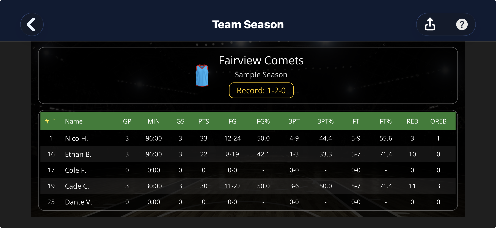
Team Season Totals
Per-player season totals for the whole team, at a glance.
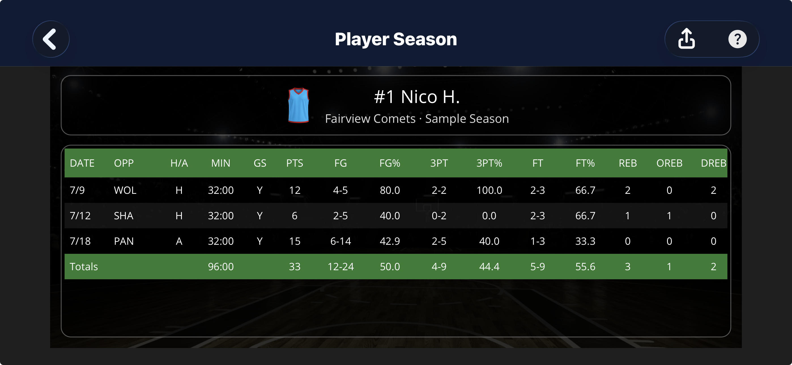
Player Season
Every game for one player — minutes, goals, assists, shots and more.
Screens shown with sample team data.